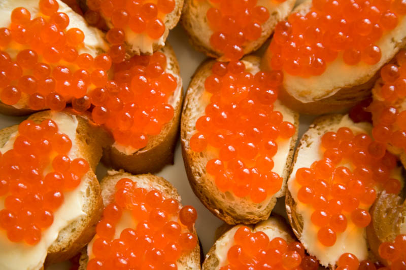

Russisk ringbrød efter en klassisk opskrift fra Karapatien. Dejen blandes koldhæver 30 dage, inde brødet bages over bål. Meget sprødt, godt med Karapatisk bjerggedsmør.
Vegetar egnet - JA Allergener - Laktose Pris 39,-
Cabanossi med rødbedecreme
Cabanossi med rødbedecreme og løg
Pris - 49 KR
Cabanossi med rødbedecreme
Cabanossi med rødbedecreme og creme er egentlig en forret, men kammerat Vladimir elskede denne ret så højt, at han forbød restauranter i Krigien at sælge det som andet end en hovedret. Vi anbefaler det dog som forret, inden en god Bortsjs. Skylles helst ned med vodka.
Vegetar egnet - JA Allergener - Laktose Pris 39,-

Caviar bruschetta
Brushcetta med russisk Caviar
Pris - 39 KR
Caviar bruschetta
Til denne dejlige Bruschetta anvender vi kun de dejligste sibiriske Caviar. Caviarerne presses ud af fiskene mens de stadig er levende, og vædes derefter i Putinka Vodka. Der er masser af bjerggedesmør på bruschettaene.
Vegetar egnet - Nej Allergener - Ingen Pris 49,-
Baltisk bondesuppe
Baltisk bondesuppe - en solid starter
Pris - 79 KR
Baltisk bondesuppe er en solid starter. Godt til dig, der skal drikke godt igennem under måltidet. Suppen består af ged, grønt og masser af løg.
Vegetar egnet - Nej Allergener - Ingen Pris 79,-
Østsibirisk kålsuppe
Kålsuppe med 7 kålvarianter
Pris - 69 KR
Østsibirisk kålsuppe
Denne lækre suppe består af 7 forskellige slags kål: Hvidkål, grønkål, brunkål, spidskål, kabanossikål, sibirisk kål og kålrabi. Dertil en masse Voda (vand) og krydderier fra Østsibirien.
Vegetar egnet - JA Allergener - Ingen Pris 69,-
Hovedretter
Bulgarsk bondesuppe
Cauceskus bulgarske bondesuppe
Pris - 99 KR
Rabatpris - 19.8 KR
Da Caucesku var i færd med at skrive sit navn med højhuse, var han nødt til at give håndværkerne solid kost, så de kunne arbejde 18 timer i døgnet, 7 dage om ugen: Bulgarsk bondesuppe. Suppen består af alt det bedste fra Bulgarien.
Vegetar egnet - Nej Allergener - Ingen Pris 79,-
Kæmperogn med kartoffelmos
Kæmpe klipfiskerogn med Kartofler og fiskefond
Pris - 89 KR
Rabatpris - 17.8 KR
Kæmperogn med kartoffelmos
Kæmpe klipfiskene i det nordlige Novogorod har længe været kendt for at levere de bedste rogn. Her sereveres de med eis-kartofler og en lækker sovs baseret på fiskefond.
Vegetar egnet - JA Allergener - Laktose Pris 39,-
Zygroffs bondeplatte
Zygroffs bondeplatte - bøndernes svar på Tapas
Pris - 109 KR
Rabatpris - 21.8 KR
UDSOLGT
Zygroffs bondeplatte
Til denne dejlige Bruschetta anvender vi kun de dejligste sibiriske Caviar. Caviarerne presses ud af fiskene mens de stadig er levende, og vædes derefter i Putinka Vodka. Der er masser af bjerggedesmør på bruschettaene.